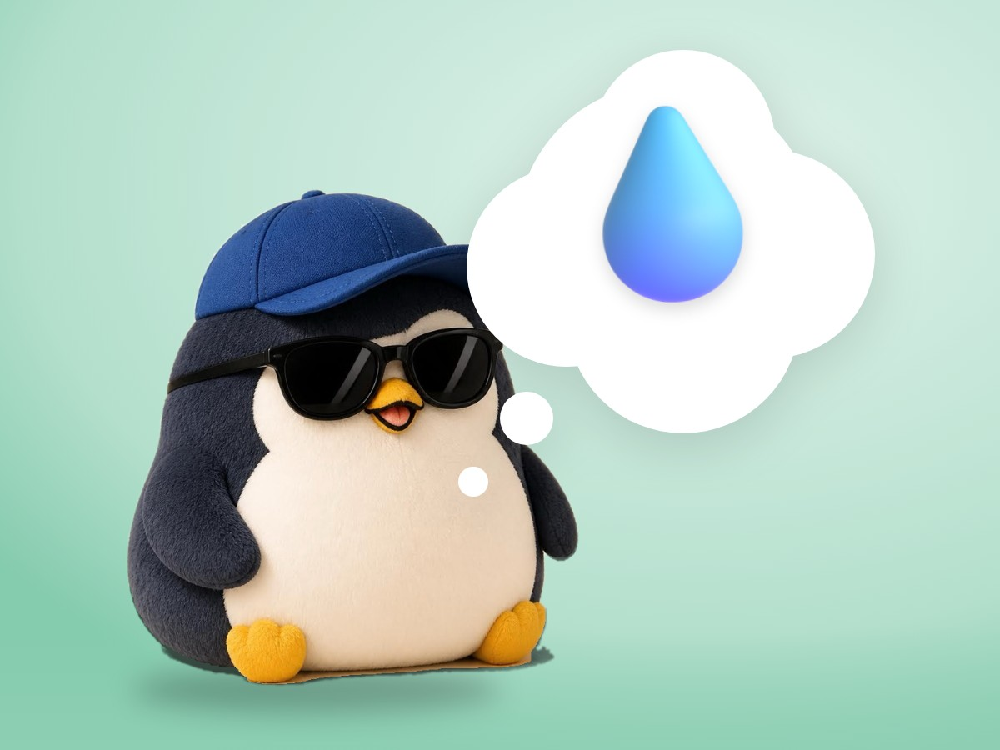

📝 DRAFT · 下書き — まだ本番に出していません · 下書き一覧
🐧 EVERYDAY LIFE⚡ 18 SEC
When your mood drops for no reason, try a glass of water first 💧

Feeling Low
On days when you feel low for no reason, maybe you just need water.
Low On Water
It seems that when your body is low on water, you may lose focus or get annoyed without noticing.
⚡ TRY IT
Why is the penguin grumpy?
Hmm… I feel grumpy today. I don't know why.
Yummy! …but I am still grumpy. 😑
Scroll, scroll… now I am grumpy AND tired. 😩
Gulp, gulp… 💧
Ahh… maybe I was just thirsty! 😊
Sips: 0/4
Pick what the penguin should try first.
✨ Before you worry, try water. It may be the easiest fix.
Water First
So before you worry, first have a glass of water.
Lucky You
If you think, "Oh, maybe I was just thirsty," that is lucky.
📚 I learned this from the Japanese blog "Panda no Ondo".